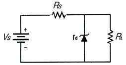
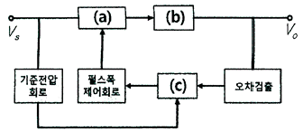
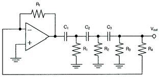
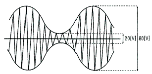
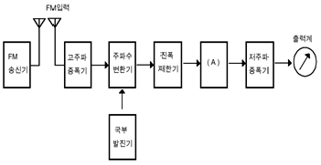
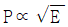
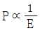

무선설비산업기사 (2020-05-24 기출문제)
1과목: 디지털 전자회로
1. 다음 그림의 정전압 다이오드 회로에서 입력이 ±2[V]변화할 때, 출력전압의 변화는? (단, 제너 다이오드의 내부저항은 rd = 4[Ω], 저항은 Rs = 200[Ω]이다.)

- 10[mV]
- 20[mV]
- 30[mV]
- 40[mV]
(정답률: 59%)

2. 제너다이오드에서 제너전압이 10[V], 전력이 5[W]인 경우 최대전류의 크기는?
- 0.⑤[A]
- 0.5[A]
- 0.⑤[mA]
- 0.5[mA]
(정답률: 80%)
3. 다음 그림은 정전압 기본구성도를 나타낸 것이며, 빈 칸 (a), (b), (c에 가장 바람직한 회로는?

- (a) 스위칭 회로, (b) 오차증폭회로, (C) 필터회로
- (a) 스위칭 회로, (b) 필터회로, (C) 오차증폭회로
- (a) 필터회로, (b) 스위칭회로, (C) 오차증폭회로
- (a) 오차증폭회로, (b) 필터회로, (C) 스위칭회로
(정답률: 78%)
4. 베이스 공통 증폭회로의 특징으로 틀린 것은?
- 입력저항이 작다.
- 출력저항이 크다.
- 전류이득은 0.96~0.98 정도이다.
- 출력전압과 입력전압은 역 위상이다.
(정답률: 67%)
5. 다음 중 공통 컬렉터 증폭기의 특징으로 옳은 것은?
- 입력저항이 매우 작다.
- 출력저항이 매우 작다.
- 전류이득이 매우 작다.
- 입출력간 전압위상을 다르게 할 수 있다.
(정답률: 57%)
6. 다음 중 부궤환(Negative Feedback) 효과로 옳지 않은 것은?
- 안정도가 개선된다.
- 이득이 감소한다.
- 왜곡이 개선된다.
- 입력 임피던스가 작아진다.
(정답률: 68%)
7. 차동증폭기의 동위상 신호 제거비(CMRR)를 나타내는 식으로 옳은 것은?
- CMRR = 차동이득 + 동위상 이득
- CMRR = 차동이득 – 동위상 이득
- CMRR = 동위상 이득 / 차동이득
- CMRR = 차동 이득 / 동위상 이득
(정답률: 75%)
8. 다음 중 발진기에 주로 사용되는 것으로 출력신호의 일부를 입력으로 되돌리는 것을 무엇이라고 하는가?
- 정궤환
- 부궤환
- 종단저항
- 고이득
(정답률: 75%)
9. 다음 회로에서 정현파를 발생시키는 발진기로 동작하기 위한 저항 Rf의 값은? (단, C1=C2=C3=0.001[μF]이고 R1=R2=R3=10[KΩ], R4=5[KΩ])

- 5[KΩ]
- 10[KΩ]
- 145[KΩ]
- 290[KΩ]
(정답률: 61%)
10. 다음 중 하틀리 발진기에서 궤환 요소에 해당하는 것은?
- 저항성
- 용량성
- 유도성
- 결합성
(정답률: 79%)
11. 진폭변조(Amplitude Modulation)의 송신기가 그림과 같은 변조파형을 가질 때 반송파전력이 460[mW]이면, 변조된 출력은 몇 [mW]인가?

- 442.8[mW]
- 469.4[mW]
- 524.6[mW]
- 542.8[mW]
(정답률: 57%)
12. 주파수변조(Frequency Modulation) 방식에서 다음 중 주파수 대역폭과 최대 주파수 편이의 관계가 옳은 것은?
- 주파수 대역폭은 최대 주파수 편이의 2배이다.
- 주파수 대역폭은 최대 주파수 편이의 3배이다.
- 주파수 대역폭은 최대 주파수 편이의 4배이다.
- 주파수 대역폭은 최대 주파수 편이의 5배이다.
(정답률: 74%)
13. 펄스의 주기와 진폭은 일정하고, 펄스의 폭을 입력신호에 따라 변화시키는 변조 방식은?
- PAM(Pulse Amplitude Modulation)
- PWM(Pulse Width Modulation)
- PPM(Pulse Position Modulation)
- PCM(Pulse Code Modulation)
(정답률: 70%)
14. QPSK에서 반송파의 위상차는?
- π/2
- π
- 2π
- 3π/2
(정답률: 76%)
15. 다음 중 멀티바이브레이터의 특징으로 옳은 것은?
- 파형에 고차의 고조파를 포함하고 있다.
- 부성저항을 이용한 발진기이다.
- 극초단파 발생에 적합하다.
- 회로의 시정수로 신호의 진폭이 결정된다.
(정답률: 56%)
16. 슈미트 트리거 회로에서 최대 루프 이득을 1이 되도록 조정하면 어떻게 되는가?
- 회로의 응답속도가 떨어진다.
- 루프 이득을 정확하게 1로 유지하면서 높은 안정도를 갖는다.
- 스스로 Reset 할 수 있다.
- 아날로그 정현파가 발생한다.
(정답률: 58%)
17. TTL 게이트에서 스위칭 속도를 높이기 위해 사용되는 다이오드는?
- 바랙터 다이오드
- 제너 다이오드
- 쇼트키 다이오드
- 정류 다이오드
(정답률: 76%)
18. 다음 중 순서 논리 회로에 대한 설명으로 틀린 것은?
- 입력 신호와 순서 논리 회로의 현재 출력상태에 따라 다음 출력이 결정된다.
- 조합 논리 회로와 결합하여 사용할 수 없다.
- 순서 논리 회로의 예로 카운터, 레지스터 등이 있다.
- 데이터의 저장 장소로 이용 가능하다.
(정답률: 76%)
19. 3개의 T 플립플롭이 직렬로 연결되어 있다. 첫 단에 1,000[Hz]의 구형파를 가해주면 최종 플립플롭에서의 출력 주파수는 얼마인가?
- 3,000[Hz]
- 333[Hz]
- 167[Hz]
- 125[Hz]
(정답률: 66%)
20. 다음 중 Access Time이 가장 짧은 것은?
- 자기 디스크
- RAM
- 자기테이프
- 광 디스크
(정답률: 76%)
2과목: 무선통신 기기
21. 위상 전이 방법에 의한 SSB송신기에 가장 적합한 이상회로는?
- 30°이상기
- 45°이상기
- 60°이상기
- 90°이상기
(정답률: 78%)
22. 다음 중 SSB 통신 방식에서 무변조시 피변조파의 송신 전력은 반송파 전력의 몇 배인가?
- 0배
- 0.25배
- 1배
- 1.5배
(정답률: 68%)
23. 250[MHz]를 FM송신기의 5[MHz] 발진기에서 4,000[MHz] 변조신호로 200[Hz]의 주파수 편이를 걸 때 송신기의 변조지수는?(오류 신고가 접수된 문제입니다. 반드시 정답과 해설을 확인하시기 바랍니다.)
- 0.⑤
- 2.5
- 20
- 50
(정답률: 57%)
24. 다음 중 ASK에 대한 설명으로 옳은 것은?
- 디지털 데이터로 아날로그 반송파의 진폭을 변조하는 방식이다.
- 아날로그 데이터로 아날로그 반송파의 진폭을 변조하는 방식이다.
- 디지털 데이터로 디지털 신호를 변환하는 방식이다.
- 아날로그 데이터로 디지털 신호를 변조하는 방식이다.
(정답률: 72%)
25. 통신속도가 200[baud]이고 보오 당 신호레벨이 4일 때, 1분 간 데이터 전송속도는?
- 12,000[bps]
- 24,000[bps]
- 48,000[bps]
- 72,000[bps]
(정답률: 75%)
26. 다음 중 디지털 변조 통신 방식에 대한 설명으로 틀린 것은?
- 진폭 편이 변조(ASK)는 정현파의 진폭에 정보를 싣는 방식으로 2진 내지 4진 폭을 이용하며 저속 통신에 이용된다.
- 주파수 편이 변조(FSK)는 정현파의 주파수에 정보를 싣는 방식으로 2가지의 주파수를 이용하며 중, 저속 통신에 이 용된다.
- 위상 편이 변조(PSK)는 정현파의 위상에 정보를 싣는 방식으로 2,4,8,16진 방식이 있으며 중, 고속 통신에 이용된다.
- 직교 진폭 변조(QAM)는 정현파의 진폭과 주파수에 정보를 싣는 방식으로 저속 통신에 이용된다.
(정답률: 78%)
27. 다음 중 디지털 변복조 기기에 대한 설명으로 틀린 것은?
- 디지털 데이터를 아날로그 통신 전송망에서 사용하는 기기이다.
- 디지털 데이터에 의해 반송파의 진폭, 주파수, 위상을 변화시킨다.
- 수신기는 송신측의 반송파와 같은 반송파를 이용하는 동기검파가 있다.
- 과변조를 실시하면 신호의 찌그러짐이 많이 발생한다.
(정답률: 73%)
28. 레이다에서 동일 거리에 있는 2개의 적은 목표물을 2개로 분리해서 볼 수 있는 능력은 무엇인가?
- 방위 분해능
- 거리 분해능
- 최대 탐지거리
- 상의 선명도
(정답률: 77%)
29. 마이크로웨이브 통신에서 송신기의 출력이 37[dBm], 도파관(W/G)의 손실이 3[dB]일 때. 안테나 입력단의 인가되는 전력은 약 얼마인가?
- 1.5[W]
- 2.5[W]
- 5[W]
- 10[W]
(정답률: 63%)
30. 가장 적은 수의 정지위성으로 양극지방을 제외한 전 세계를 커버(Cover)하는 통신망을 구성할 수 있는 배치 방법은?
- 5개의 위성을 72도의 간격으로 배치한다.
- 4개의 위성을 90도의 간격으로 배치한다.
- 3개의 위성을 120도의 간격으로 배치한다.
- 2개의 위성을 180도의 간격으로 배치한다.
(정답률: 81%)
31. 입력전압 0.5[V]의 신호를 가해 5[V]의 증폭된 신호를 얻었다면, 이 때의 이득은 얼마인가? (단, 입출력 저항은 같다.)
- 20[dB]
- 30[dB]
- 44[dB]
- 55[dB]
(정답률: 68%)
32. 다음 중 무선 데이터 패킷망 구조에서 회선망 구조에서처럼 가입자 정보를 일시적으로 저장하는 VLR 역할을 하는 것은?
- FA
- HA
- Auc
- AAA
(정답률: 61%)
33. 전송 신호가 전송 매체를 통해 전달될 때 일부 신호가 열로 변하여 에너지가 손실되는 것은 무엇이라 하는가?
- 누화
- 열 잡음
- 왜곡
- 감쇠
(정답률: 72%)
34. 다음 중 HLR에 대한 설명으로 옳은 것은?
- 자신의 MSC에 등록된 MS의 모든 정보를 영구적으로 저장하고 있는 데이터베이스이다.
- 다른 MSC에 등록된 MS가 자신의 MSC 관할 구역으로 넘어왔을 때 위치등록 절차에 따라 해당 가입자 정보를 일시 저장하는 데이터 베이스이다.
- MS와 BTS 간의 음성정보 및 데이터정보를 연결하는 스위치 장치이다.
- MSC와 MSC 간의 음성정보 및 데이터정보를 연결하는 스위치 장치이다.
(정답률: 58%)
35. 다음 중 축전지의 충전 종류(방식)가 아닌 것은?
- 초충전(Initial Charge)
- 평상충전(Normal Charge)
- 과충전(Over Charge)
- 이중충전(Double Charge)
(정답률: 71%)
36. UPS 전원장치 방식 중 On-Line 방식은 부하전류의 몇[%]를 인버터로부터 공급 받는가?
- 30[%]
- 60[%]
- 80[%]
- 100[%]
(정답률: 76%)
37. 다음 중 태양광 설치 후 전기료에 대한 설명으로 옳은 것은?
- 태양광 설치 후 전기료 절감은 지역별 차이가 없다.
- 설치장소의 일사량, 지형, 기후 조건에 따라 차이가 있다.
- 설치장소의 인구수에 따라 차이가 있다.
- 설치 회사의 설치 인력 수에 따라 차이가 있다.
(정답률: 81%)
38. 다음 중 실효 선택도의 특성에 해당되지 않는 것은?
- 혼변조
- 상호 변조
- 감도 억압 효과
- 근접주파수 선택도
(정답률: 60%)
39. 다음 그림은 FM 송신기의 신호 대 잡음비의 측정구성도를 나타낸 것이다. (A)에 들어가야 하는 것은?

- 직선검파기
- 주파수변별기
- 가변감쇠기
- 수신기
(정답률: 79%)
40. 정류기의 평활 회로는 출력파형에서 맥동분을 제거하여 직류에 가까운 파형을 얻기 위해 어떤 여파기를 이용하는가?
- 대역소거 여파기
- 고역 여파기
- 대역통과 여파기
- 저역 여파기
(정답률: 74%)
3과목: 안테나 개론
41. 다음 중 전파의 전파속도에 영향을 미치는 요소로 맞는 것은?
- 유전율과 투자율
- 점도와 유전율
- 투자율과 도전율
- 유전율과 도전율
(정답률: 78%)
42. 다음 중 손실을 갖는 매질 내를 전파하는 평면파의 감쇠정수에 대한 설명으로 옳은 것은?
- 감쇠정수는 표피두께에 반비례한다.
- 감쇠정수는 주파수에 무관하다.
- 감쇠정수는 도체의 고유 도전율에 반비례한다.
- 감쇠정수의 크기와 위상정수 사이에는 상호 역의 관계를 갖는다.
(정답률: 69%)
43. 30[MHz] 주파수에 대한 전파의 1/2 파장은 얼마인가?
- 1[m]
- 5[m]
- 10[m]
- 15[m]
(정답률: 54%)
44. 다음 중 평형·불평형 변환회로(Balun)에 대한 설명으로 틀린 것은?
- 평형전류만 흐르게 하며 초단파대 이상의 정합회로로 사용된다.
- 스페르토프형 Balun의 경우 단일 주파수용으로 쓰인다.
- L, C 소자를 사용하는 것을 분포 정수형 Balun이라 한다.
- 집중 정수형 Balun으로 위상 반전형과 전자 결합형이 있다.
(정답률: 77%)
45. 다음 중 동조 급전선의 특징에 대한 설명으로 틀린 것은?
- 정합장치가 불필요하다.
- 급전선 상에 정재파를 실어 급전한다.
- 전송효율이 비동조 급전선보다 좋다.
- 급전선의 길이와 파장은 일정한 관계가 있다.
(정답률: 74%)
46. 다음의 급전 방식 중 옳은 것은?
- 전압 급전은 급전점에서 전압이 최소 전류가 최대이다.
- 전압 급전일 때 직렬공진회로를 사용하려면 급전선의 길이는 λ/4의 우수배로 사용한다.
- 전류 급전일 때 병렬공진회로를 사용하려면 급전선의 길이는 λ/4의 기수배로 사용한다.
- 전류 급전일 때 안테나의 길이는 λ/2이며 급전점에서 진행파가 최대이다.
(정답률: 60%)
47. 도파관의 모드(mode) 계수에 대한 설명으로 틀린 것은?
- TE01은 도파관의 짧은 변에 1개의 반파장 자계 성분이 있다.
- TE30은 도파관의 긴 변에 3개의 반파장 전계 성분이 있다.
- TE10은 구형 도파관의 기본 모드이다.
- TM22은 도파관 양 변에 각각 2개의 반파장 자계 성분이 있다.
(정답률: 50%)
48. 다음 중 어떤 구간 L에서 도파관의 장변을 줄여 줌으로써 감쇠를 얻는 방식의 도파관 감쇠기는?
- 저항 감쇠기
- 리액턴스 감쇠기
- 종단 감쇠기
- 콘덕턴스
(정답률: 82%)
49. 정재파 안테나에 반사기를 부착하면 이론적으로 이득은 얼마나 증가 하는가?
- 3[dB]
- 4[dB]
- 5[dB]
- 6[dB]
(정답률: 59%)
50. 송신안테나와 수신안테나가 200λ[m] 떨어져 있고, 각각의 방향성 이득은 20[dB]와 15[dB]이다. 만일 수신안테나에 5[mW]의 전력이 수신되어야 한다면, 최소 송신전력의 값은 얼마인가?
- 약 8[W]
- 약 10[W]
- 약 12[W]
- 약 14[W]
(정답률: 53%)
51. 복사전력과 전계강도 사이의 관계가 올바르게 표현된 것은?
- P∝E2
- p∝E


(정답률: 72%)
52. 다음 중 안테나의 이득을 향상시키기 위한 방법으로 옳은 것은?
- 안테나 복사소자를 배열한다.
- 안테나의 Q를 작게 한다.
- 안테나의 특성임피던스를 작게 한다.
- 안테나의 직경이 굵은 것을 사용한다.
(정답률: 50%)
53. 다음 중 안테나에 광대역성을 부여하는 방법과 관계가 적은 것은?
- 진행파 여진형 소자를 이용하는 방법
- Q를 낮게 하여 공진 특성을 완만하게 하는 방법
- 자기 임피던스의 변화를 증대시키는 방법
- 대수주기형으로 하는 방법
(정답률: 43%)
54. Friis의 전달공식에서 자유공간 전송손실 특성에 대한 설명으로 틀린 것은?
- 안테나 이득이 높을수록 손실은 줄어든다.
- 사용주파수가 높을수록 손실은 줄어든다.
- 사용주파수에 대해 20dB/decade의 손실을 가진다.
- 송수신 지점간 거리에 대해 20dB/decade의 손실을 가진다.
(정답률: 57%)
55. 다음 중 지상파의 전파 모드와 관계가 없는 것은?
- 주파수
- 대지정수
- 온도
- 편파면
(정답률: 67%)
56. 다음 중 장·중파대역에서 지표파에 의해 전파되는 전파의 감쇠가 가장 작은 환경은?
- 해상
- 평지
- 사막
- 도시지역
(정답률: 80%)
57. 다음 중 전리층 산란파의 특징 중 잘못된 것은?
- 초단파대 초가시거리 통신을 할 수 있다.
- 단일 주파수로 24시간 연속통신이 가능하다.
- 근거리 에코의 원인이 된다.
- 전송가능한 대역이 넓다.
(정답률: 60%)
58. 송수신점간의 거리가 정해졌을 때 전리층 반사파를 이용하여 통신할 수 있는 최적의 사용 주파수를 무엇이라고 하는가?
- LUF
- MUF
- FOT
- VHF
(정답률: 73%)
59. 주어진 기지국과 이동국 사이의 거리 이내에서 이동국이 그 주변으로 이동할 때 지형의 변화로 인해 발생하는 페이딩은 어는 것인가?
- Short term Fading
- Long term Fading
- Rician Fading
- Rayleigh Fading
(정답률: 74%)
60. 다음 중 도약성 페이징의 방지 방법으로 적합하지 않은 것은?
- 수신기내에 ACG회로나 진폭 제한기 사용
- 페이딩 방지용 안테나 사용
- 다이버시티 수신법 사용
- 전파 흡수체 사용
(정답률: 61%)
4과목: 전자계산기 일반 및 무선설비기준
61. 주기억장치에 저장된 명령어를 하나하나씩 인출하여 연산코드 부분을 해석한 다음 해석한 결과에 따라 적합한 신호로 변환하여 각각의 연산 장치와 메모리에 지시 신호를 내는 것은?
- 연산 논리 장치(ALU)
- 입출력 장치(I/O Unit)
- 채널(Channel)
- 제어 장치(Control Unit)
(정답률: 72%)
62. 2진수 10101101.0101을 8진수로 변환한 것 중 옳은 것은?
- 255.22
- 255.23
- 255.24
- 3E.A1
(정답률: 70%)
63. 수치 데이터의 표현방식에 대한 설명 중 틀린 것은?
- 수치 데이터를 표현할 때는 부호, 크기, 소수점 등으로 표시하는데 소수점은 고정소수점 표현방식과 부동소수점 표현방식이 있다.
- 고정소수점 방식에서 정수는 소수점이 수의 맨 왼쪽 끝에 있다고 가정한 것이고, 소수는 소수점이 맨 오른쪽 끝에 있다고 가정한 것이다.
- 소수점의 위치가 어느 한 곳에 고정되어 있는 것을 의미하는 것을 고정소수점 방식이라 한다.
- 고정소수점 방식은 주로 정수로 표현하는데 사용된다.
(정답률: 67%)
64. 원시 프로그램에서 나타난 토큰의 열을 그 언어의 문법에 맞도록 만든 트리(Tree)는?
- Parse Tree
- Binary Tree
- Binary Search Tree
- Skewed Tree
(정답률: 62%)
65. 다음 중 운영체제의 기능에 대한 설명이 아닌 것은?
- 사용자와 컴퓨터 간의 인터페이스 기능을 제공한다.
- 소프트웨어의 오류를 처리한다.
- 사용자간의 자원 사용을 관리한다.
- 입출력을 지원한다.
(정답률: 61%)
66. 컴퓨터가 인식하는 명령어를 논리적으로 순서에 맞게 나열하여, 어떤 기능을 처리하게 해주는 것을 무엇이라고 하는가?
- 하드웨어
- 소프트웨어
- 부울대수
- 논리회로
(정답률: 67%)
67. 다음 중 32비트 컴퓨터에서 8 Full Word와 6 Niddle은 각각 몇 비트인가?
- 256비트, 48비트
- 128비트, 24비트
- 256비트, 24비트
- 128비트, 48비트
(정답률: 67%)
68. 다음 중 마이크로컨트롤러에 대한 설명으로 틀린 것은?
- ALU와 CU, Register를 포함하고 있다.
- 자동적으로 제품이나 장치를 제어하는데 사용한다.
- 제품군에는 AVR시리즈와 PlC, 8⑤1이 있다.
- 구성요소 중에는 타이머와 SPI, ADC,UART, RS-232 등의 입출력 모듈도 필요하다.
(정답률: 57%)
69. 마이크로프로세서가 직접 이해할 수 있는 프로그램 언어를 무엇이라고 하는가?
- 기계어
- 어셈블리어
- C 언어
- Veriog HDL
(정답률: 77%)
70. 명령어의 주소 부분이 그대로 유효 명령어의 주소 필드에 나타나고, 분기 형식의 명령어에서는 실제 분기할 주소를 나타내는 주소 모드를 무엇이라고 하는가?
- 상대 주소 모드
- 직접 주소 모드
- 간접 주소 모드
- 베이스 레지스터 어드레싱 모드
(정답률: 66%)
71. 다음 중 전파법에서 특정한 주파수의 용도를 지정하는 것을 무엇이라 하는가?
- 주파수 지정
- 주파수 분배
- 주파수 할당
- 주파수 용도
(정답률: 52%)
72. 다음 중 무선국 허가증에 기재할 사항이 아닌 것은?
- 무선설비의 설치 장소
- 운용의무시간
- 무선국의 준공기한
- 무선종사자의 자격 및 정원
(정답률: 62%)
73. 무선국의 정기검사 유효 기간이 3년인 무선국은 허가유효기간 만료일 전후 얼마 이내에 정기검사를 받도록 되어 있는가?
- 1개월
- 2개월
- 3개월
- 6개월
(정답률: 72%)
74. 방송국의 허가를 받은 자는 방송국 운용개시 후 몇 개월 이내에 방송구역 전계강도측정 자료를 제출하여야 하는가?
- 3개월
- 6개월
- 9개월
- 12개월
(정답률: 77%)
75. 허가 유효기간이 1년 미만인 무선국의 재허가 신청기간은 언제까지인가?
- 유효기간 만료 10일전
- 유효기간 만료 15일전
- 유효기간 만료 1개월 전
- 유효기간 만료 3개월 전
(정답률: 76%)
76. 다음 중 통신 보안책임자의 수행업무로 틀린 것은?
- 무선국 운용에 따른 통신보안업무 활동계획 수립 · 시행
- 무선통신을 이용하여 발신하고자 하는 통신문에 대한 보안성 검토
- 불필요한 내용의 무선통신 사용 억제
- 암호와 평문의 혼합사용
(정답률: 77%)
77. 정부에서 방송통신설비를 설치, 운용하는 자의 설비를 조사하는 경우가 아닌 것은?
- 재해, 재한 예방을 위한 경우
- 국가비상사태를 대비하기 위한 경우
- 방송통신설비 관련 시책을 수립하기 위한 경우
- 방송통신설비의 이상으로 소규모 방송통신 장애가 발생할 우려가 있는 경우
(정답률: 71%)
78. 다음 중 방송통신기자재 등의 적합인증 신청 시 구비서류가 아닌 것은?
- 사용자 설명서
- 외관도
- 회로도
- 주요 부품명세서
(정답률: 77%)
79. 전파법령에서 “무선국에서 사용하는 주파수마다의 중심 주파수를 말한다.”로 정의되는 용어는?
- 지정주파수
- 기준주파수
- 특성주파수
- 분배주파수
(정답률: 53%)
80. 수색구조용 레이다 트랜스폰더의 송신장치로 소인되는 주파수 범위는?
- 7,200[MHz] 이상 ~ 8,500[MHz] 이하
- 8,200[MHz] 이상 ~ 9,500[MHz] 이하
- 9200[MHz] 이상 ~ 9500[MHz] 이하
- 9500[MHz] 이상
(정답률: 57%)
입력이 -2[V]일 때, 다이오드는 역방향이므로 전류가 흐르지 않으며 출력은 -0.7[V]이다. 이때, 제너 다이오드의 내부저항과 Rs로 인한 전압강하는 총 204[V]이다. 따라서, 출력전압은 -2[V] + 0.204[V] = -1.796[V]이다.
따라서, 입력이 ±2[V]변화할 때, 출력전압의 변화는 1.796[V] - (-1.796[V]) = 3.592[V]이다.
하지만, 문제에서는 출력전압의 변화를 "mV" 단위로 요구하므로, 3.592[V]를 1000으로 나누어주면 3.592[mV]이다.
하지만, 이때 Rs와 제너 다이오드의 내부저항으로 인한 전압강하는 2 × 4[Ω] + 200[Ω] = 208[Ω]이다. 따라서, 출력전압의 변화는 208[Ω] × 3.592[mV] = 0.747136[V] = 747.136[mV]이다.
하지만, 문제에서는 소수점 첫째자리까지만 답을 요구하므로, 747.136[mV]를 반올림하여 40[mV]가 된다.
따라서, 정답은 "40[mV]"이다.